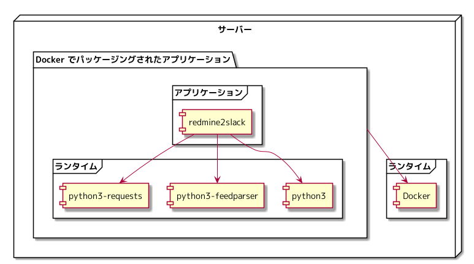
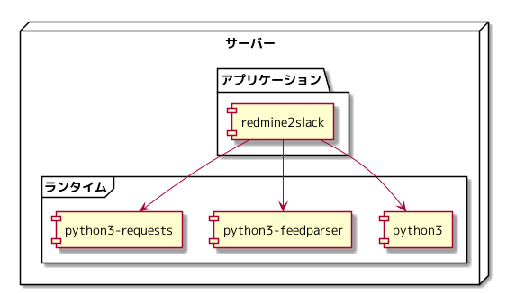
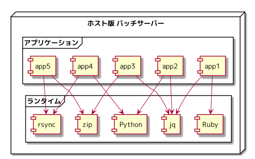
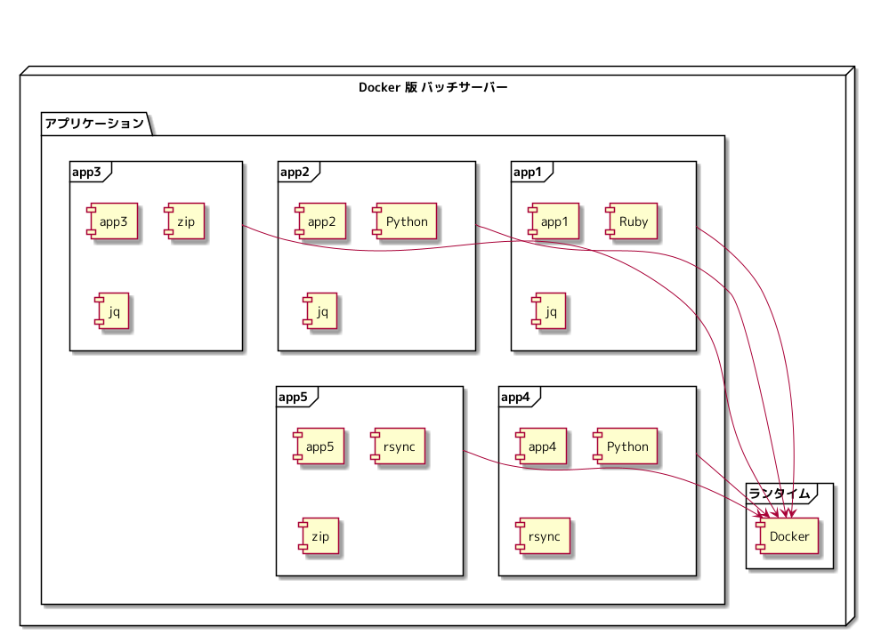

さくらインターネット Advent Calendar 2021 4日目の記事になります。
Docker が何者なのか、 Docker の使い方などの情報はインターネットに沢山公開されていますが、 「 Docker を使うと何がうれしいのか」という情報が目に入ってきたことはないので、 サーバー管理者、アプリケーション開発者がいる環境で、 Docker を使うと何がうれしいのかということを自分なりに考え、テキストに起こしてみました。
きっかけ
文学フリマに出店したときに、「インフラエンジニアやってます。仕事は仮想サーバーですが、 Docker に興味はあって調べてはみたのですが、 Docker を使うと何がうれしいのかということをイメージするには至れなかったです。仮想サーバーから Docker になると何がうれしいのかということをイメージできるような情報があると、 このモヤモヤが晴れるのではないかと思っています。」という話を参加者の一人からされました。
確かに、自分もそのような情報が目に入ってきたことはりませんでした。 社内で「 Docker を使うと何がうれしいのか」というテキストを自分で書いて、チーム内に展開しており、 会社の情報は入っていないので、これを公開すればよいかもしれないなと考え、今回、この記事を書くに至っています。
アプリケーションとランタイム
これから先の説明に利用する、アプリケーションとランライムという言葉を定義しておきます。
- アプリケーション: 目的の処理を実行するもの
- ランタイム: アプリケーションを実行するときに必要なもの
シェルスクリプトで、集計するスクリプトを作成したと仮定した場合に、 作成したシェルスクリプトはアプリケーションで、 シェルスクリプトの中で sed, awk などを使っていれば、 シェルスクリプトというアプリケーションの実行に必要なものということで、 sed, awk はランタイムとなります。
想定読者
下記に該当する方に自分ごととしてイメージしながら読んでもらえるのではないかと考えています。
- アプリケーションを実行するための環境を Linux でサーバーを構築している
- サーバーを管理する人とアプリケーションを開発する人が分かれており、アプリケーションを実行するための環境を Linux で構築するサーバーを管理する側の人である
- バッチサーバーなるサーバーを用意し、そこで cron を使い様々なバッチを実行している
Docker は何をするものなのか
インターネットに沢山の情報があるため、 Docker の詳細な内容は、そちらにお任せします。
- アプリケーションを実行する手段
- アプリケーションを Docker の提供している方法でパッケージングする
- Docker の提供している方法でパッケージングした(された)アプリケーションを Docker の提供している方法で実行する
- Docker の提供している方法でパッケージングした(された)アプリケーションを実行するため、サーバーに Docker がインストールする
社内で動かしている Redmine のアクティビティを定期的に Slack へ通知するアプリケーションを例に、 サーバー上でのアプリケーション、ランタイムの構成を図にしました。
Docker を使った場合のサーバー構成
Docker でパッケージングされたアプリケーションが、 サーバーにインストールしている Docker を使い起動します。

Docker を使わない場合のサーバー構成
サーバーにインストールしたランタイムを利用し、アプリケーションが起動します。

サーバー管理者になって考えてみる
アプリケーション開発者とサーバー管理者が異なっているという状況にてバッチサーバーが運用されている仮定のもと、 以下の観点から、 Docker を使わない場合はどうなりそうか、 Docker を使う場合はどうなりそうか考えてみます。
- 依存関係
- 移植性
- アップデート
Docker を使わない場合
Docker を使わず、ホストサーバーにインストールされたランタイムを複数アプリケーションが参照しているバッチサーバーを想定し、観点に対して、どうなりそうか考えてみます。

依存関係
- アプリケーションの実装がホストサーバーのランタイムの制約を受ける
- ランタイムの管理がサーバー管理者側にあるとすると、アプリケーション開発者はホストサーバーにランタイムが無い場合、サーバー管理者との連携する必要がある
- 同じランタイムの別バージョンを利用したいという要望がアプリケーション開発者からあった場合にサーバー管理者が頭をひねる必要がある
- アプリケーション開発者にバッチの配置を解放すると、配置されたバッチがどのランタイムに依存しているのかサーバー管理者にはわからない
移植性
- アプリケーションとランタイムの依存関係を何かしらの手段で管理していなければサーバー移行時に依存関係の調査から必要になる
- アプリケーション開発者とサーバー管理者のコミュニケーションコストが発生する
- 「アプリケーションを配置すればそのまま動く」とならない状況は往々にして移行が捗らず頓挫する(経験談)
アップデート
- ランタイムを更新することにより動かなくなるアプリケーションが出てくる可能性がある
- 複数のアプリケーションが同じランタイムを参照していた場合、ランタイム更新することによる影響が計り知れない
Docker を使う場合
Docker を使うことによってバッチサーバーがどのようになりそうか考えてみます。

依存関係
- アプリケーションを実行するために必要なランタイムは Docker のみとなる
- サーバー管理者は、アプリケーション実行のためのランタイムを管理しなくてよくなる
- アプリケーション開発者は、ランタイムを自身でコントロールできる
- アプリケーションの実装がホストサーバーにインストールされたランタイムに制約されなくなる
移植性
- サーバー管理者は、 Docker の実行環境を整備すればよい
- アプリケーション開発者は、アプリケーションを Docker で実行できるようにすればよい
- Docker の実行環境と Docker でパッケージングされたアプリケーションがあれば、アプリケーションを実行できる
アップデート
- 個々のアプリケーションはランタイムを含め独立している
- サーバー管理者が更新を気にする範囲は Docker の実行環境に限定される
- アプリケーション開発者がランタイムを更新しても、その影響は開発したアプリケーションに限定される
Docker を使うと何がうれしいか
アプリケーション開発者には、アプリケーションを Docker で実行できるようパッケージングすれば、 サーバーにどのようなランタイムが入っていなければならないのかを気にせず開発できる環境を提供でき、 サーバー管理者は、 Docker によるアプリケーションの実行環境を運用するというところだけに注力すればよくなるということが、 Docker を使うことによるうれしいことなのではないかと考えています。
次回は、 Docker でのアプリケーション実行環境を提供したとして何が起きそうか について考えてみます。